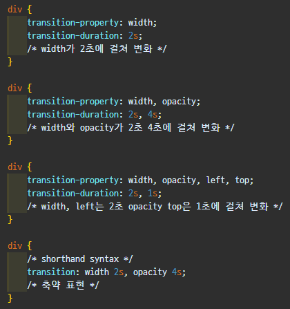

트랜지션(transition)은 CSS 프로퍼티의 값이 변화할 때,
프로퍼티 값의 변화가 일정 시간(duration)에 걸쳐 일어나도록 하는 것이다.
트랜지션(transition)은 상태 변화에 동반하여 변경되는 CSS 프로퍼티 값에 의한 표시의 변화를
부드럽게 하기 위해 애니메이션 속도를 조절한다.
요소에 마우스를 올렸을 경우, 색 혹은 크기이 변화하는 시간을 지정해 줄 때 흔히 사용한다.
스타일에 변화를 줄때 이 시간을 지정해 줌으로써 좀더 부드럽게 스타일 전환이 이루지게 되는 특징을 가지고 있다.
그래서 다음과 같은 값을 지정해 줄 필요가 있다.
- 효과를 적용시킬 속성과 함께 시작시의 값과 완료시의 값
- 변화하는 데 걸리는 시간
transition은 자동으로 발동되지 않는다.
:hover와 같은 가상 클래스 선택자 또는 JavaScript의 부수적인 액션에 의해 발동한다.
그리고, transform과 함께 사용되어지는 경우가 많이 있다.
| 속성 | 설명 |
|---|---|
| transition | 모든 transition 속성을 이용한 스타일을 한 줄에 설정할 수 있음. |
| transition-property | 요소에 추가할 전환(transition) 효과를 설정함. |
| transition-duration | 전환(transition) 효과가 지속될 시간을 설정함. |
| transition-timing-function | 전환(transition) 효과의 시간당 속도를 설정함. |
| transition-delay | 전환(transition) 효과가 나타나기 전까지의 지연 시간을 설정함. |
트랜지션의 대상이 되는 CSS 프로퍼티명을 지정한다.
지정하지 않는 경우 모든 프로퍼티가 트랜지션의 대상이 된다.
복수의 프로퍼티를 지정하는 경우 쉼표(,)로 구분한다.
주의해야 할 사항은 모든 CSS 프로퍼티가 트랜지션의 대상이 될 수 없다는 것이다.
예를 들어 width, font-size, background-color 등은
하나의 범주(width, font-size는 크기, background-color는 색상)안에서 값이 변화하지만
display 프로퍼티는 그렇지 않다.
트랜지션의 대상이 될 수 있는 CSS 프로퍼티는 다음과 같다.
| [ Box model ] |
width height, max-width, max-height, min-width, min-height, padding, margin, border-color, border-width, border-spacing |
|---|---|
| [ Background ] | background-color, background-position |
| [ 좌표 ] | top, left, right, bottom |
| [ 텍스트 ] |
color font-size, font-weight, letter-spacing, line-height text-indent, text-shadow, vertical-align, word-spacing |
| [ 기타 ] |
opacity, outline-color, outline-offset, outline-width visibility, z-index |
트랜지션에 일어나는 지속시간(duration)을 초 단위(s) 또는 밀리 초 단위(ms)로 지정한다.
프로퍼티값을 지정하지 않을 경우 기본값 0s이 적용되어 어떠한 트랜지션 효과도 볼 수 없다.
transition-duration 프로퍼티값은 transition-property 프로퍼티값과 1:1 대응한다.

트랜지션 효과의 변화 흐름, 시간에 따른 변화 속도와 같은 일종의 변화의 리듬을 지정한다.
대부분의 타이밍 함수는 큐빅 베이지어(cubic bezier)를 정의하는 네 점에 의해 정의되므로
상응하는 함수의 그래프로 제공해서 명시할 수 있다.
transition-timing-function: ease;
transition-timing-function: linear;
transition-timing-function: ease-in;
transition-timing-function: ease-out;
transition-timing-function: ease-in-out;

트랜지션 발동 대기시간. 시간을 초 단위(s) 또는 밀리 초 단위(ms)로 지정
즉, transition-delay로 대기 사간을 지정하여 프로퍼티의 값이 변화하여도 즉시 트랜지션이 실행되지 않고,
일정 시간 대기한 후 트랜지션이 실행되도록 한다.
transition-delay: 3s;
모든 트랜지션 프로퍼티를 한번에 지정할 수 있는 shorthand이다.
값을 지정하지 않은 프로퍼티에는 기본값이 지정된다.
transition-duration은 반드시 지정해야 한다.
지정하지 않는 경우 기본값 0이 셋팅되어 어떠한 트랜지션도 실행되지 않는다.
transition: property duration function delay
기본값은 각각 all, 0, ease, 0